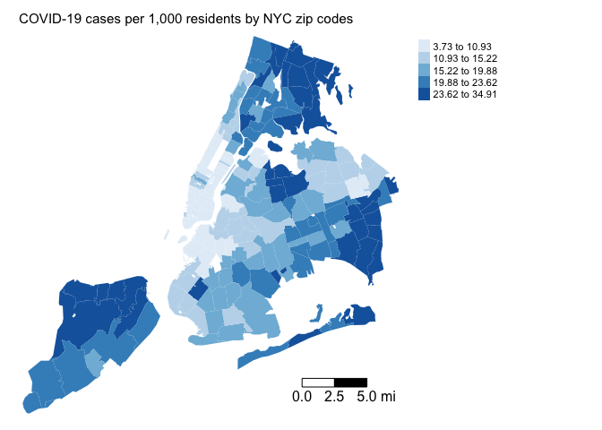

Spatial Regression
GEO 200CN - Quantitative Geography
Professor Noli Brazil
May 13, 2024
In this lab guide, we formally incorporate spatial dependency between units of observations in a regression framework. We will be closely following this week’s handout on Spatial Regression. The objectives of this lab are as follows
- Learn how to run and interpret a spatial lag model
- Learn how to run and interpret a spatial error model
- Learn how to decide between a standard linear regression, spatial lag, and spatial error model.
To help us accomplish these learning objectives, we will examine the association between neighborhood characteristics and COVID-19 case rates in New York City zip codes. New York City was the epicenter of the initial COVID-19 outbreak in the United States. We will examine whether there are disparities in the types of neighborhoods that were first hit the hardest in the city.
Installing and loading packages
We’ll be using one new package in this lab, spatialreg, which contains the functions we need to perform spatial regression models in R. First, install the package if you have not already done so.
install.packages("spatialreg")Then load it and the other packages we’ll be using in this lab.
library(tidyverse)
library(sf)
library(spdep)
library(tmap)
library(spatialreg)Why run a spatial regression
The reasons why you run a spatial regression significantly overlap with the reasons for running a regular linear regression. However, there is one additional important motivation: to explicitly incorporate spatial dependency in the model. There are two common flavors of spatial regression: the spatial error model (SEM) and the spatial lag model (SLM). The main reason to run a spatial error model is to control for general spatial autocorrelation. We want to do this because spatial autocorrelation breaks the very important assumption that our regression errors are not correlated. The main reason to run a spatial lag model is to formally model spatial contagion. We are modelling the impact of our neighbors’ outcomes on our own outcome. For example, the impact of nearby crime on neighborhood crime. Or the impact of a plot’s crop yield on its neighboring plot’s yield.
So, in one case, we are using spatial regression because we see spatial dependency as a nuisance to control for. In the other case, we are using spatial regression because there is substantive interest in formally examining the impact of neighboring areas.
Our research questions in this lab is: What ecological characteristics are associated with zip code COVID-19 case rates in New York City? Do these relationships change after accounting for unobserved spatial dependency? Do nearby COVID-19 rates influence the rates in a neighborhood?
Bringing in the data
We will bring in a shape file containing COVID-19 cases per 1,000 residents and demographic and socioeconomic characteristics for New York city zip codes. I zipped up the file and uploaded it onto Github. Set your working directory to an appropriate folder and use the following code to download and unzip the file.
#insert the pathway to the folder you want your data stored into
setwd("insert your pathway here")
#downloads file into your working directory
download.file(url = "https://raw.githubusercontent.com/geo200cn/data/master/zctanyccovidwk7.zip", destfile = "zctanyccovidwk7.zip")
#unzips the zipped file
unzip(zipfile = "zctanyccovidwk7.zip")Bring in the New York City zip code shape file into R using
st_read()
zctanyc <- st_read("zctanyccovidwk7.shp")COVID-19 case data were downloaded from the NYC Department of Health and Mental Hygiene (confirmed cases up through May 1, 2020). Socioeconomic and demographic data were downloaded from the 2014-2018 American Community Survey. A record layout of the data can be found here.
Basic multiple linear regression
We’re interested in examining the zip code characteristics associated
with the number of COVID-19 cases per 1,000 residents. We should first
run through the various exploratory data analysis tools we went through
several weeks ago to
get a feel for the data. We would then run a standard multiple linear
regression model, which we should always do first before running any
type of spatial regression model. Our dependent variable is
covidrate and our independent variables are percent black
pblk, percent Hispanic phisp, median household income
medincome, total population totp, and percent of
residents 65 years old and older p65old. Use the function
lm(). Save the results in an object named
fit.ols.
#eliminate scientific notation
options(scipen=999)
fit.ols <- lm(covidrate ~ pblk + phisp + medincome +totp + p65old,
data = zctanyc)What are the results? Use summary()
summary(fit.ols)##
## Call:
## lm(formula = covidrate ~ pblk + phisp + medincome + totp + p65old,
## data = zctanyc)
##
## Residuals:
## Min 1Q Median 3Q Max
## -10.5625 -4.2955 -0.8762 3.7455 15.4670
##
## Coefficients:
## Estimate Std. Error t value Pr(>|t|)
## (Intercept) 12.57451167 3.21496495 3.911 0.000132 ***
## pblk 0.09056056 0.02013347 4.498 0.0000126 ***
## phisp 0.12825817 0.03007490 4.265 0.0000331 ***
## medincome -0.00004588 0.00001737 -2.642 0.009012 **
## totp -0.00004357 0.00001757 -2.480 0.014097 *
## p65old 0.36634418 0.09276337 3.949 0.000114 ***
## ---
## Signif. codes: 0 '***' 0.001 '**' 0.01 '*' 0.05 '.' 0.1 ' ' 1
##
## Residual standard error: 5.48 on 171 degrees of freedom
## Multiple R-squared: 0.3767, Adjusted R-squared: 0.3585
## F-statistic: 20.67 on 5 and 171 DF, p-value: 0.0000000000000004017After running the standard linear regression model, use the various diagnostic tools we learned in the second linear regression lab to test for the OLS assumptions and detect for multicollinearity.
Exploratory spatial data analysis
The next step is to conduct an Exploratory Spatial Data Analysis (ESDA) to gain an understanding of how your data are spatially structured. Perhaps there is no spatial dependency present in your data. So, why fancy it up if when you don’t need to?
Map your data
The first step in ESDA is to map your dependent variable. Map the COVID-19 case rates
tm_shape(zctanyc, unit = "mi") +
tm_polygons(col = "covidrate", style = "quantile",palette = "Blues",
border.alpha = 0, title = "") +
tm_scale_bar(breaks = c(0, 2.5, 5), text.size = 1, position = c("right", "bottom")) +
tm_layout(main.title = "COVID-19 cases per 1,000 residents by NYC zip codes", main.title.size = 0.95, frame = FALSE, legend.outside = TRUE)
Does it look like our dependent variable exhibits spatial autocorrelation?
Next, you’ll want to map the residuals from your OLS regression
model. To extract the residuals from fit.ols, use the
resid() function. Save it back into zctanyc.
zctanyc <- zctanyc %>%
mutate(olsresid = resid(fit.ols))Next, map the residuals
tm_shape(zctanyc, unit = "mi") +
tm_polygons(col = "olsresid", style = "quantile",palette = "Reds",
border.alpha = 0, title = "", midpoint = 0) +
tm_scale_bar(breaks = c(0, 2.5, 5), text.size = 1, position = c("right", "bottom")) +
tm_layout(main.title = "Residuals from linear regression", main.title.size = 0.95, frame = FALSE, legend.outside = TRUE)
Looks spatially clustered. But we’ll formally test it next.
Spatial weights matrix
The exploratory maps show signs of spatial dependency. Rather than eyeballing it, let’s formally test it using a measure of spatial autocorrelation. Fortunately, we already know how to measure spatial autocorrelation thanks to a previous lab.
We need to create a neighbor object and its associated spatial weights matrix. You need to define
- Neighbor connectivity (who is you neighbor?)
- Neighbor weights (how much does your neighbor matter?)
Neighbor relationships in R are represented by neighbor nb
objects. An nb object identifies the neighbors for each feature
in the dataset. We use the command poly2nb() from the
spdep package to create a contiguity-based neighbor
object. Let’s specify Queen connectivity.
nycb<-poly2nb(zctanyc, queen=T)The other two neighbor types we discussed in the spatial autocorrelation lab include k-nearest neighbor and distance based neighbor.
The next step is to assign weights to each neighbor relationship. The
weight determines how much each neighbor counts. You will need
to employ the nb2listw() command. Let’s create a weights
object nycw for our Queen contiguity defined neighbor object
nycb. We might have zero neighbor zip codes, so include the
zero.policy = TRUE argument.
nycw<-nb2listw(nycb, style="W", zero.policy = TRUE)Here, style = “W” indicates that the weights for each spatial unit are standardized to sum to 1 (this is known as row standardization).
Moran Scatterplot
We’ve now defined what we mean by neighbor by creating an nb object and the influence of each neighbor by creating a spatial weights matrix. Now we can examine the Moran scatter plot for the dependent variable covidrate.
moran.plot(zctanyc$covidrate, listw=nycw, xlab="Standardized COVID-19 Case Rate",
ylab="Standardized Lagged COVID-19 Case Rate",
main=c("Moran Scatterplot for COVID-19 case rates", "in New York"),
zero.policy = TRUE )
Does it look like there is an association? Yes.
Spatial autocorrelation
The map and Moran scatter plot provide descriptive visualizations of clustering (autocorrelation) in COVID-19 case rates. But, rather than eyeballing the correlation, we can calculate a global index of spatial autocorrelation, and attach statistical significance to it.
The most popular test of spatial autocorrelation is the Global
Moran’s I test. We’ll use the command moran.mc() in the
spdep package to calculate the Moran’s I using Monte
Carlo simulation to obtain statistical inference.
Question 1: Calculate the Global Moran’s I for the outcome variable using 999 Monte Carlo simulations. Is the outcome spatially autocorrelated?
We should also test spatial autocorrelation in the residuals. Use the
lm.morantest() function on the linear regression model
fit.ols.
Question 2: Calculate the Global Moran’s I for the residuals. Are the residuals spatially autocorrelated?
If spatial autocorrelation is detected, that does not mean we should automatically run a spatial regression model. There are other modelling approaches to dealing with spatial dependency.
Question 3: Could the inclusion of NYC borough dummy variables assist in reducing residual spatial dependence? Include in the OLS model the variable borough, and calculate the Global Moran’s I for the residuals. Are the residuals spatially autocorrelated?
Spatial lag model
Based on the exploratory mapping, Moran scatter plot, and the Moran’s I, there appears to be spatial autocorrelation in the dependent variable. This means that if there is a spatial dependency process going on and we fit an OLS model our coefficients will be biased and inefficient. That is, the coefficient size and sign are not close to their true value and its standard errors are underestimated.
A spatial lag model (SLM) can be estimated in R using the command
lagsarlm(), which is in the spatialreg
package. Fit the SLM
fit.lag<-lagsarlm(covidrate ~ pblk + phisp + medincome +totp + p65old,
data = zctanyc,
listw = nycw,
zero.policy=TRUE) The only difference between the code for lm() and
lagsarlm() is the argument listw, which you
use to specify the spatial weights matrix. We specify
zero.policy=TRUE to eliminate zero neighbor zip codes. Also
note that lm() uses OLS to estimate the model whereas
lagsarlm() uses Maximum
Likelihood Estimation.
Let’s calculate the Global Moran’s I on the model’s residuals.
moran.mc(resid(fit.lag), nycw, nsim=999, zero.policy=TRUE)##
## Monte-Carlo simulation of Moran I
##
## data: resid(fit.lag)
## weights: nycw
## number of simulations + 1: 1000
##
## statistic = 0.023944, observed rank = 736, p-value = 0.264
## alternative hypothesis: greaterA summary of results.
summary(fit.lag)##
## Call:lagsarlm(formula = covidrate ~ pblk + phisp + medincome + totp +
## p65old, data = zctanyc, listw = nycw, zero.policy = TRUE)
##
## Residuals:
## Min 1Q Median 3Q Max
## -7.70893 -2.21115 -0.51621 2.03252 12.76569
##
## Type: lag
## Regions with no neighbours included:
## 59
## Coefficients: (asymptotic standard errors)
## Estimate Std. Error z value Pr(>|z|)
## (Intercept) 2.181482601 2.056079156 1.0610 0.288694
## pblk 0.040057708 0.013213379 3.0316 0.002433
## phisp 0.062861581 0.020085387 3.1297 0.001750
## medincome -0.000014023 0.000010870 -1.2900 0.197057
## totp -0.000023471 0.000010986 -2.1365 0.032641
## p65old 0.186119527 0.059389122 3.1339 0.001725
##
## Rho: 0.70864, LR test value: 132.91, p-value: < 0.000000000000000222
## Asymptotic standard error: 0.046717
## z-value: 15.169, p-value: < 0.000000000000000222
## Wald statistic: 230.09, p-value: < 0.000000000000000222
##
## Log likelihood: -482.7463 for lag model
## ML residual variance (sigma squared): 11.661, (sigma: 3.4148)
## Number of observations: 177
## Number of parameters estimated: 8
## AIC: 981.49, (AIC for lm: 1112.4)
## LM test for residual autocorrelation
## test value: 0.54636, p-value: 0.45981The results are formatted in a similar way as the OLS results. The major difference is the inclusion of the results for the spatial lag coefficient labelled “Rho”. R provides different ways to test the statistical significance of Rho depending on the null distribution. Right next to Rho, R shows the LR test value and its associated p-value. Likelihood ratio (LR) test shows if the addition of the lag is an improvement (from linear regression) and if that’s significant. Below Rho is its standard error, and right below that is the test statistic “z-value” and its associated p-value, which are based on the standard normal distribution. R also shows the Wald statistic and its associated p-value. The Wald test examines if the new parameter (the lag) should be included it in the model. If significant then the new variable improves the model fit and needs to be included. At the bottom, R also shows the LM test. Lagrange Multiplier (LM) is a test for the absence of spatial autocorrelation in the lag model residuals. If significant then you can reject the Null (no spatial autocorrelation). To be clear, all are basically testing the statistical significance of the spatial lag term.
As described in the handout, we’ll need to estimate the direct and
indirect effects to get the total effects of each variable on the
outcome in a spatial lag model. To do this, use the function
impacts(). You need to include the lag model object, the
spatial weights matrix, and the number of Monte Carlo simulations to
obtain simulated distributions of the impacts (this is used primarily
for getting the standard errors for statistical inference).
fit.lag.effects <- impacts(fit.lag, listw = nycw, R = 999)
fit.lag.effects## Impact measures (lag, exact):
## Direct Indirect Total
## pblk 0.04856330681 0.08892198731 0.13748529412
## phisp 0.07620920998 0.13954310050 0.21575231049
## medincome -0.00001700018 -0.00003112824 -0.00004812842
## totp -0.00002845456 -0.00005210180 -0.00008055636
## p65old 0.22563896431 0.41315689640 0.63879586071To get the standard errors, you use the summary()
function and ask it to report the test statistic (Z) and the
associated p-values.
summary(fit.lag.effects, zstats = TRUE, short = TRUE)## Impact measures (lag, exact):
## Direct Indirect Total
## pblk 0.04856330681 0.08892198731 0.13748529412
## phisp 0.07620920998 0.13954310050 0.21575231049
## medincome -0.00001700018 -0.00003112824 -0.00004812842
## totp -0.00002845456 -0.00005210180 -0.00008055636
## p65old 0.22563896431 0.41315689640 0.63879586071
## ========================================================
## Simulation results ( variance matrix):
## ========================================================
## Simulated standard errors
## Direct Indirect Total
## pblk 0.0152786536 0.03225807833 0.04529713888
## phisp 0.0233953446 0.04793485395 0.06787789732
## medincome 0.0000130416 0.00002586462 0.00003848806
## totp 0.0000133995 0.00002810820 0.00004057923
## p65old 0.0687539846 0.15669132582 0.21562701936
##
## Simulated z-values:
## Direct Indirect Total
## pblk 3.211151 2.808731 3.083337
## phisp 3.261228 2.933746 3.195830
## medincome -1.273383 -1.194494 -1.234203
## totp -2.099306 -1.869408 -1.988095
## p65old 3.368093 2.753414 3.074781
##
## Simulated p-values:
## Direct Indirect Total
## pblk 0.0013220 0.0049737 0.0020469
## phisp 0.0011093 0.0033490 0.0013943
## medincome 0.2028822 0.2322848 0.2171272
## totp 0.0357900 0.0615660 0.0468012
## p65old 0.0007569 0.0058977 0.0021066Question 4: In your own words, interpret the direct and indirect effects of pblk based on the results presented above.
Spatial error model
The spatial error model (SEM) incorporates spatial dependence in the errors. If there is a spatial error process going on and we fit an OLS model our coefficients will be unbiased but inefficient. That is, the coefficient size and sign are asymptotically correct but its standard errors are underestimated.
We can estimate a spatial error model in R using the command
errorsarlm() also in the spatialreg
package.
fit.err<-errorsarlm(covidrate ~ pblk + phisp + medincome +totp + p65old,
data = zctanyc,
listw = nycw,
zero.policy=TRUE) And the Moran’s I of the residuals
moran.mc(resid(fit.err), nycw, nsim=999, zero.policy=TRUE)##
## Monte-Carlo simulation of Moran I
##
## data: resid(fit.err)
## weights: nycw
## number of simulations + 1: 1000
##
## statistic = -0.04723, observed rank = 220, p-value = 0.78
## alternative hypothesis: greaterAre the residuals spatially autocorrelated?
A summary of the model
summary(fit.err)##
## Call:errorsarlm(formula = covidrate ~ pblk + phisp + medincome + totp +
## p65old, data = zctanyc, listw = nycw, zero.policy = TRUE)
##
## Residuals:
## Min 1Q Median 3Q Max
## -7.2334 -1.9737 -0.3498 1.6442 13.4324
##
## Type: error
## Regions with no neighbours included:
## 59
## Coefficients: (asymptotic standard errors)
## Estimate Std. Error z value Pr(>|z|)
## (Intercept) 12.226926402 2.689463340 4.5462 0.000005461
## pblk 0.061604532 0.022419247 2.7478 0.005999
## phisp 0.122124864 0.029625877 4.1222 0.000037521
## medincome -0.000019168 0.000014531 -1.3191 0.187120
## totp -0.000020288 0.000011160 -1.8180 0.069068
## p65old 0.188907339 0.070122942 2.6939 0.007061
##
## Lambda: 0.78837, LR test value: 136.64, p-value: < 0.000000000000000222
## Asymptotic standard error: 0.042485
## z-value: 18.556, p-value: < 0.000000000000000222
## Wald statistic: 344.34, p-value: < 0.000000000000000222
##
## Log likelihood: -480.8819 for error model
## ML residual variance (sigma squared): 10.804, (sigma: 3.287)
## Number of observations: 177
## Number of parameters estimated: 8
## AIC: NA (not available for weighted model), (AIC for lm: 1112.4)The presentation of results are similar to that of the spatial lag. But, instead of Rho, you are shown Lambda.
Question 5: What is the interpretation of the
coefficient on medincome in the Spatial Error model? Explain
the difference in this interpretation to the interpretations for the
medincome coefficient produced by lm() in the OLS
model and lagsarlm() in the Spatial Lag model.
Model Selection
We’ve run all three models, so the question then is which one to choose: OLS, Spatial lag, or Spatial error? You can make this decision a couple of ways. First, rely on comparisons of goodness of fit measures, specifically the Akaike Information Criterion (AIC) and Bayesian Information Criterion (BIC). Second, run formal hypothesis tests comparing the models using Lagrange Multiplier tests.
AIC and BIC
AIC and BIC rely on the log likelihood, which captures the probability of the observed data given the model parameters. The lower the AIC and BIC, the better model fit. Rather than rely on one vs another, in general, it might be best to use AIC and BIC together in model selection.
The lagsarlm() and errorsarlm() already
provide the AIC at the bottom of the summary output. But, you can call
it up by using the AIC() function. To get the BIC, use the
function BIC()
Question 6: Run the AIC and BIC for the OLS, SLM and SEM models. Based on the AIC and BIC, which model would you choose and why?
Lagrange Multiplier Tests
A popular set of tests to determine the appropriate model was proposed by Anselin (1988) (also see Anselin et al. 1996), These tests are elegantly known as Lagrange Multiplier (LM) tests and are discussed in the Handout. The null in these tests is the OLS model. A test showing statistical significance rejects this null.
The LM test uses the likelihood of the models being compared to assess their fit. The likelihood is the probability the data given the parameter estimates. The goal of a model is to find values for the regression coefficients that maximize the likelihood, that is, to find the set of parameter estimates that make the data most likely. The Lagrange multiplier compares the likelihood of two models. In our case, you are comparing whether the likelihood of a spatial model (alternative) is statistically higher than that of an OLS (null). We’ll use LMlag to refer to a test of SLM vs. OLS and LMerr to refer to a test of SEM vs. OLS.
The issue with the Lagrange Multiplier test is when you are comparing the OLS to the spatial lag, you are not taking into account the presence of the spatial error (and vice versa). In other words, a test of the SLM against the null of an OLS may be rejecting the null in the presence of the spatial error model. Recognizing this issue, Anselin et al. (1996) make an asymptotic adjustment to the LM test to correct for this. They formulate robust versions of the LM tests - robust to the presence of the other spatial model.
We will not go into great detail on how these LM tests are derived. If you are interested in these details, I suggest reading Anselin (1988), which formulates the non robust LM tests, and Anselin et al. (1996), which constructs the robust LM tests.
We’re still not quite there in terms of how to choose between the three different models. The LM test tests between the OLS and SLM and the OLS and SEM, but cannot directly compare SLM and SEM. The SLM and SEM are non-nested models (the OLS is a nested model of SLM - take out Wy and you get the OLS), and thus statistical tests like the LM (and others using the likelihood and other fit statistics) cannot make direct comparisons. However, Anselin (1996) formulated a set of decision steps using the LM tests to decide between SLM and SEM (and OLS). The steps are outlined in this week’s handout.
To run the LM tests in R, use the lm.LMtests() command
in the spatialreg package. The argument
test = "all" runs all the tests. You should look at
LMerr (Spatial Error), LMlag (Spatial Lag),
RLMerr (Robust Spatial Error) and RLMlag (Robust
Spatial Lag).
lm.LMtests(fit.ols, listw = nycw,
test = c("LMerr", "LMlag", "RLMerr", "RLMlag"),
zero.policy=TRUE)##
## Lagrange multiplier diagnostics for spatial dependence
##
## data:
## model: lm(formula = covidrate ~ pblk + phisp + medincome + totp +
## p65old, data = zctanyc)
## weights: nycw
##
## LMerr = 139.96, df = 1, p-value < 0.00000000000000022
##
##
## Lagrange multiplier diagnostics for spatial dependence
##
## data:
## model: lm(formula = covidrate ~ pblk + phisp + medincome + totp +
## p65old, data = zctanyc)
## weights: nycw
##
## LMlag = 137.42, df = 1, p-value < 0.00000000000000022
##
##
## Lagrange multiplier diagnostics for spatial dependence
##
## data:
## model: lm(formula = covidrate ~ pblk + phisp + medincome + totp +
## p65old, data = zctanyc)
## weights: nycw
##
## RLMerr = 11.124, df = 1, p-value = 0.0008521
##
##
## Lagrange multiplier diagnostics for spatial dependence
##
## data:
## model: lm(formula = covidrate ~ pblk + phisp + medincome + totp +
## p65old, data = zctanyc)
## weights: nycw
##
## RLMlag = 8.5867, df = 1, p-value = 0.003386Question 7: Using the steps outlined in the Handout, specify which model is “best” based on the LM test results? Explain why.
Although it is important to run these tests, whether SLM or SEM is most appropriate is really a prior theoretical question, which must be considered relative to the goals of a specific research question. If we expect to see, or are interested in estimating, spatial feedback, then SLM would be a more appropriate model. For example, if you are interested in understanding whether COVID-19 diffuses across neighborhood borders, an SLM is the most appropriate model. If you are interested in understanding whether crime rates in a neighborhood are influenced by the crime rates in nearby neighbors, run SLM. If you are interested in simply controlling for spatial dependency as a nuisance, run an SEM.

This
work is licensed under a
Creative
Commons Attribution-NonCommercial 4.0 International License.
Website created and maintained by Noli Brazil